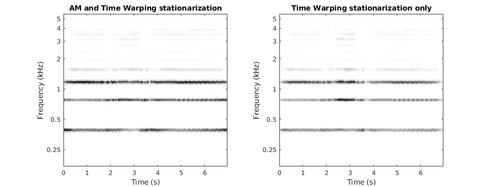
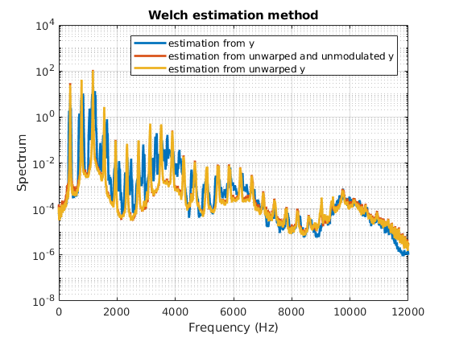

Deformation estimations on a singing female voice recording
Copyright (C) 2017 Adrien MEYNARD
This program is free software; you can redistribute it and/or modify it under the terms of the GNU General Public License as published by the Free Software Foundation; either version 3 of the License, or (at your option) any later version.
This program is distributed in the hope that it will be useful, but WITHOUT ANY WARRANTY; without even the implied warranty of MERCHANTABILITY or FITNESS FOR A PARTICULAR PURPOSE. See the GNU General Public License for more details.
You should have received a copy of the GNU General Public License along with this program. If not, see http://www.gnu.org/licenses/.
Author: Adrien MEYNARD Email: adrien.meynard@univ-amu.fr Created: 2017-12-19
Contents
Load signal
clear all; close all; clc; warning off; addpath('cwt'); addpath('deform_estimation'); load('signals/sing') T = length(y);
Joint estimation
Dt = 100; % temporal subsampling for the theta estimator dgamma0 = ones(1,T); a0 = ones(1,T); wav_typ = 'sharp'; % wavelet type (cf. cwt_JEFAS) wav_paramWP = 10; % corresponding parameter for warping estimation wav_param = 500; % for spectrum and AM estimations NbScales = 125; scalesAM = 2.^(linspace(1,6,NbScales)); subrate = 7; % subsampling step for the scales to ensure the covariance invertibility scalesWP = scalesAM(1:subrate:end); stopWP = 2e-2; % minimal gap between two steps in the gradient itWP = 6; % number of gradient iterations r = 1e-3; % regularization parameter % scales for spectrum estimation /!\must include scale=1/2 (ou pas) Nf = 2500; NbScalesS = 200; scalesS = 2.^(linspace(-1,7,NbScalesS)); % for spectrum estimation Nit = 10; % maximal number of iterations in the joint estimation stop_crit = 5e-3; % relative update threshold paramWAV = {wav_typ,wav_param,wav_paramWP}; paramAM = {'AM',scalesAM,r}; % AM no noise paramWP = {scalesWP,itWP,stopWP}; paramS = {scalesS,Nf}; tic; [aML, dgammaML, Sx, stop_crit] = estim_altern(y,Dt,dgamma0,a0,paramWAV,paramWP,paramAM,paramS,stop_crit,Nit); toc;
Iteration 1 Relative update WP: Inf % Relative update AM: 41.95 % Iteration 2 Relative update WP: 95.71 % Relative update AM: 40.11 % Iteration 3 Relative update WP: 1.09 % Relative update AM: 3.77 % Iteration 4 Relative update WP: 0.24 % Relative update AM: 0.02 % Elapsed time is 406.476894 seconds.
Analysis: stationarization (CWT and spectrum)
addpath('analysis') z = statAMWP(y,aML,dgammaML); z0 = statAMWP(y,a0,dgammaML); Wz = cwt_JEFAS(z,scalesAM,wav_typ,wav_param); Wz0 = cwt_JEFAS(z0,scalesAM,wav_typ,wav_param); t = linspace(0,(T-1)/Fs,T); figure; colormap(flipud(gray)) subplot(1,2,1); imagesc(t,log2(scalesAM),abs(Wz)); xlabel('Time (s)') set(gca,'yticklabel',[]); title('AM and Time Warping stationarization') p = subplot(1,2,2); imagesc(t,log2(scalesAM),abs(Wz0)); xlabel('Time (s)'); xi0 = Fs/4; sobs = cellfun(@str2num,get(p,'yticklabel')); fobs = round(xi0./2.^sobs); set(gca,'yticklabel',fobs); title('Time Warping stationarization only'); ylabel('Frequency (Hz)'); alpha = 50; Nf = 50000; Sy = estim_spec(y,Nf,alpha); Sz = estim_spec(z,Nf,alpha); Sz0 = estim_spec(z0,Nf,alpha); freq = linspace(0,Fs,Nf); figure; semilogy(freq,Sy,freq,Sz,freq,Sz0,'linewidth',2); V = axis; axis([0 12000 V(3) V(4)]); grid on; xlabel('Frequency (Hz)'); ylabel('Spectrum'); title ('Welch estimation method'); legend('estimation from y','estimation from unwarped and unmodulated y','estimation from unwarped y') 
Audio
disp('Press any key to listen to the original sound'); pause; soundsc(y,Fs); disp('Press any key to listen to the effect of AM and Time Warping stationarizations'); pause; soundsc(z,Fs); disp('Press any key to listen to the effect of Time Warping stationarization only'); pause; soundsc(z0 ,Fs);